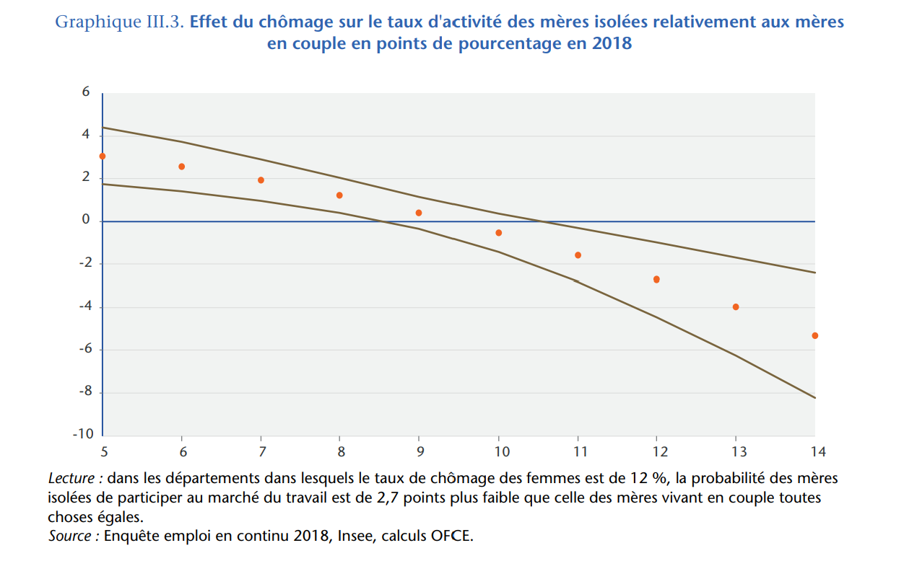

Previous research
Research project supported by the Service des droits des femmes et de l’égalité entre les femmes et les hommes
OFCE report -> Etude sur la situation économique et sociale des parents isolés. Niveau de vie, marché du travail et politiques publiques
Abstract
Ce rapport présente une analyse des facteurs de précarité auxquels les parents isolés doivent faire face du fait de leur configuration familiale spécifique. Ces facteurs sont appréhendés sous plusieurs angles : celui de leurs conditions de vie (niveau de vie et logement…), celui de leur caractéristiques individuelles (niveau de diplôme, âge, …) et celui de leur situation sur le marché du travail (participation, chômage, type de contrat, temps de travail, …). Les politiques publiques ciblées, politiques sociales, fiscales mais aussi politiques de l’emploi, permettent de soutenir ces familles. Mais l’interaction entre les différents dispositifs socio-fiscaux peut avoir des conséquences négatives sur la situation des parents isolés (en particulier le traitement des pensions alimentaires dans le système socio-fiscal).
Alimony and the French Tax_ benefit system
“Réduire significativement le taux de pauvreté des familles monoparentales”, Billets de Blog OFCE, Hélène Périvier et Muriel Pucci, 29 juin 2021.
New project research
Team
Hélène Périvier, OFCE Sciences Po Paris
Muriel Pucci, Université Pairs 1, OFCE Sciences Po Paris
Raul Sampognaro, OFCE Sciences Po Paris
Objective
The project aim at producing an analysis of the situation of lone parents in the labour market in France. It will up-date the analysis produce in the previous OFCE report by focusing more precisely on the exposure to unemployment by lone mothers. In particular the first research, we have shown that the probability to participate to the labour market for lone mothers depends on the local level of unemployment : the higher the local unemployment rate is the lower the participation of lone mothers, every thing being equal. This result suggests a specific discouraged worker effect for lone mothers, as show in the following graph :
